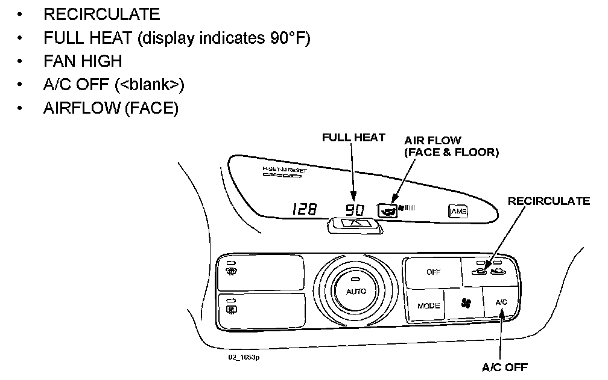
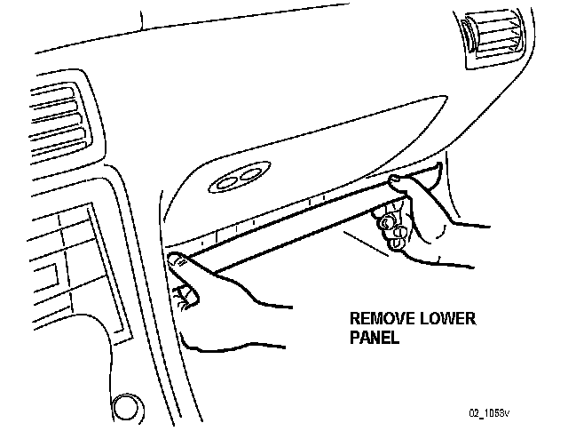
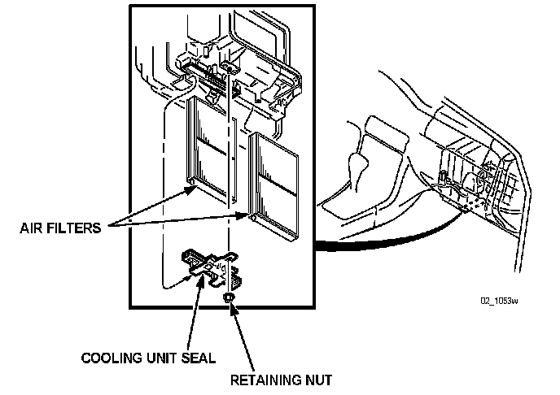
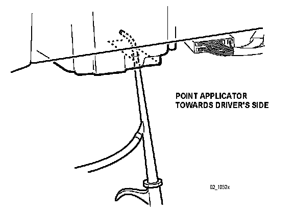

2001-2002 Millenia
2001-2002 Millenia (with cabin air filter)1. Dry the evaporator using the following procedure:
WARNING:
Running the engine inside an enclosed area, such as a garage, is dangerous. Exhaust gas, which contains poisonous carbon monoxide, could easily enter the cabin. Loss of consciousness or even death could occur. Don't run the engine when inside an enclosed area.
A. Start the engine.

B. Set the HVAC controls as follows:
^ RECIRCULATE
^ FULL HEAT (display indicates 90°F)
^ FAN HIGH
^ A/C OFF (
^ AIRFLOW (FACE)
NOTE:
There are three A/C positions on the LCD panel (A/C, A/C econ,
C. Open one window approximately one half inch.
D. Let the engine run for 15 minutes.

2. Remove the lower panel by pulling downward at both ends.

3. Remove the 10 mm nut retaining the cabin air filter bracket.
4. Remove the bracket by sliding downward.
5. Remove the cabin air filters by sliding downward. Discard the filters if dirty.
6. Cover the cabin air filter access hole with duct tape.
7. Pierce a hole in the center of the duct tape with a knife.
8. Shake a bottle of Mazda Cooling Coil Coating well and attach it to applicator, then connect the applicator to compressed shop air.
9. Insert the applicator into the pierced hole through the duct tape.

10. Point the nozzle tip in the direction of the driver's side.
11. Spray the entire contents of the bottle in short bursts, 3 seconds ON, 3 seconds OFF into the rotating fan. A fine mist may exit from the ducts.
12. When the bottle is empty, stop the engine and remove the applicator.
NOTE:
For reuse, clean the applicator by flushing a bottle of clean water through it.
13. Use STEP 1 to dry and cure the product.
14. Remove the duct tape and install the previously cleaned or new filters as needed.
15. Reinstall the cabin air filter bracket.
16. Reinstall the lower panel.
17. Note application date in service record.